Popüler Olanlar
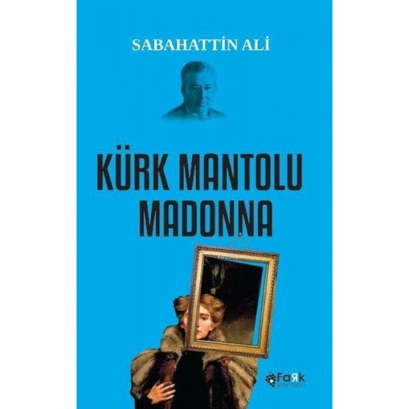
Kürk Mantolu Madonna | Kitap
Türk edebiyatının en güzel, en hüzünlü aşk romanlarının başında gelir Kürk Mantolu Madonna. Gerçek aşkı arayan iki insanın, Raif Efendi ile Maria Puder’in tutku dolu hikâyesidir. Sabahattin Ali bu romanda, mutsuzlukla kaplı yalnızlığında ve acılı geçmişinde yaşayan silik, yılgın, yenilmiş bir taşra memuru olan Raif Efendi ile güçlü bir kadın görünümü çizen Maria Puder’in kişiliklerinde, edebiyatımızın en başarılı psikolojik anlatılarından birini de ortaya koyar. Kürk Mantolu Madonna, dilinin sadeliği, roman karakterlerinin duygu ve düşünce dünyalarının betimlenmesinde ve insan çözümlemelerindeki derinliğiyle edebiyatımızın başyapıtlarından biridir.
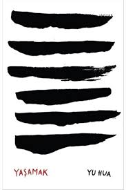
Yaşamak | Kitap
Aile servetini yiyip tükettiği gençlik günlerinde, uzun bir hayatın ona neler sunacağından habersizdir elbette Fugui. Yıllar sonra, yaşlı öküzüyle tarlasını sürerken tanıştığı bir yabancıya hayatından söz etmeye başladığında, şımarık bir gencin başına gelenlerden fazlasını sayıp dökecektir bu yüzden: Fugui, kendisiyle birlikte altı insanın hayatını, kaderin sürprizlerini, yaşamın acılarını ve sevinçlerini anlatır. Onun dilinden -daha doğru bir ifadeyle Yu Hua’nın kaleminden- dökülenler, insanlık durumlarına dair epik bir romana dönüşür böylece. Basit bir anlatım, güçlü bir anlatı doğurur: Sabanın toprakta bıraktığı izlere benzer kâğıt üzerinde satırlar. Yaşamın her şeyi kapsaması gibi, Yaşamak da hayatı olduğu gibi kucaklar. Doğumları ve ölümleri, mutsuzlukları ve umutlarıyla... Yayımlandığında ülkesinde yasaklanmasına rağmen, bir hayat öyküsü okumamış da sanki bir hayat yaşamış olduklarını söyleyen okurlarının her geçen gün artmasıyla bir “modern klasik”e dönüşen Yaşamak’ı Bahar Kılıç, Çince aslından çevirdi.
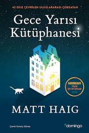
Gece Yarısı Kütüphanesi | Kitap
“Yaşamla ölüm arasında bir kütüphane var,” dedi. “Bu kütüphanedeki raflar sonsuza kadar gider. Her kitap yaşamış olabileceğin başka bir hayatı yaşama şansını sunar sana. Farklı seçimler yapmış olsan, şu an nasıl bir hayatın olacağını görürsün… Pişmanlıklarını telafi etme şansın olsaydı, bazı konularda farklı davranır mıydın?” Nora Seed berbat halde. Kedisi öldü. İşinden kovuldu. Abisi onunla konuşmuyor. Kimsenin ona ihtiyacı yok. Art arda alınmış kötü kararların sonucunda bir kütüphanede buluyor kendini. Zamanın hiç akmadığı bir gece yarısı kütüphanesinde, sonsuz sayıda kitabın ortasında... Kitapların her birinde Nora’nın farklı bir hayatı yazılı. Başka kararlar verseydi yaşamış olabileceği hayatlar. Farklı kariyerler, farklı eşler, farklı arkadaşlar, farklı şehirler arasında gidip gelen Nora’nın aklı sorularla doluyor. Mutluluk sadece önemli sandığımız seçimlerde mi gizli? Yanlış giden her detayın sorumlusu gerçekten biz miyiz? Hayatı yaşanılır kılan ne? Yanlış bir karar insanın tüm hayatına mal olabilir mi? İngiliz edebiyatının önemli isimlerinden Matt Haig; Nora’nın pişmanlıklara, ihtimallere ve yeniden seçme imkânına dair çıktığı bu yolculukta, ona eşlik edecek okurlara sürükleyici ve insanın en temel sorunlarını konu alan bir kurgu sunuyor.
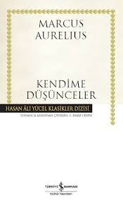
Kendime Düşünceler | Kitap
Batı felsefesinin tek filozof-imparatoru Marcus Aurelius, günümüzde hem politikacı hem de düşünür kimliğiyle adından söz ettiren Roma hükümdarlarından biridir. Savaşlarla geçen yaşamı boyunca hayranlıkla felsefe metinleri okumuş, Germen kavimleriyle savaştığı sırada cephede yazdığı Kendime Düşünceler’le dünya felsefe tarihine önemi yadsınamaz bir eser kazandırmıştır. Bugün hâlâ Stoacı felsefenin en önemli metinlerinden biri olarak okunan Kendime Düşünceler, Stoacı düşüncenin modern dünyaca anlaşılmasını sağlamış başlıca metinlerden biridir. Aurelius bu ölümsüz metinde kendinden önceki Roma hükümdarlarının ve kendisinin yönetim şekillerini sorgular; kocaman bir kente benzettiği evreni, insanı merkezine alarak irdeler. Aurelius için yaşamdaki her bir ayrıntı bütünün iyiliğine hizmet eder; bu yüzden akıl yürütme kabiliyetini kullanarak doğayı, evreni ve kendisini araştırmaya mecburdur insan
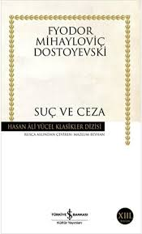
Suç ve Ceza | Kitap
Dostoyevski (1821-1881): Gerek 1840 ortalarından itibaren yayımlamaya başladığı Beyaz Geceler ve Öteki gibi uzun öykü-kısa romanlarıyla, gerekse ilkini elinizde tuttuğunuz Suç ve Ceza, Budala ve Karamazov Kardeşler gibi Sibirya sürgünü sonrası büyük romanlarıyla Dostoyevski, insanın karanlık yakasını kendinden sonraki bütün romancıları derinden etkileyecek biçimde dile getirmiş büyük bir 19. yüzyıl ustasıdır. Mazlum Beyhan (1944); Yayımlamış olduğu Dostoyevski’den Suç ve Ceza ve Budala, Tolstoy’dan Çocukluğum, İlkgençliğim, Gençliğim ve Gogol’dan Arabeskler benzeri çalışmalar düşünüldüğünde, Beyhan, hiç tartışmasız son 35 yılın en önemli Rus edebiyatı çevirmenlerinden biridir.
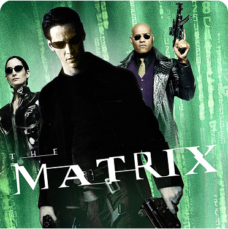
Matrix | Film
Saygın bir yazılım şirketinde çalışan Thomas Anderson (Keanu Reeves), gecelerini "Neo" adı altında program kırarak ve Matrix'i araştırarak geçirir. Esrarengiz şekilde Trinity (Carrie Ann Moss) ve Morpheus (Laurence Fishburne) ile tanışan Neo, yaşadığı dünyanın aslında beyninde gerçekleşen bir simulasyon olduğu gerçeğini öğrendikten sonra ordan kurtarılır ve Morpheus'un önderliğindeki ekibe katılır. Neo gerçek dünyada ilk nefesini aldıktan sonra simulasyona tekrar girerek Matrix'in ne olduğunu kavrayacak ve kurtarılma nedenini öğrenerek gelişen olaylar çerçevesinde yeni kimliğini tanımaya çalışacaktır
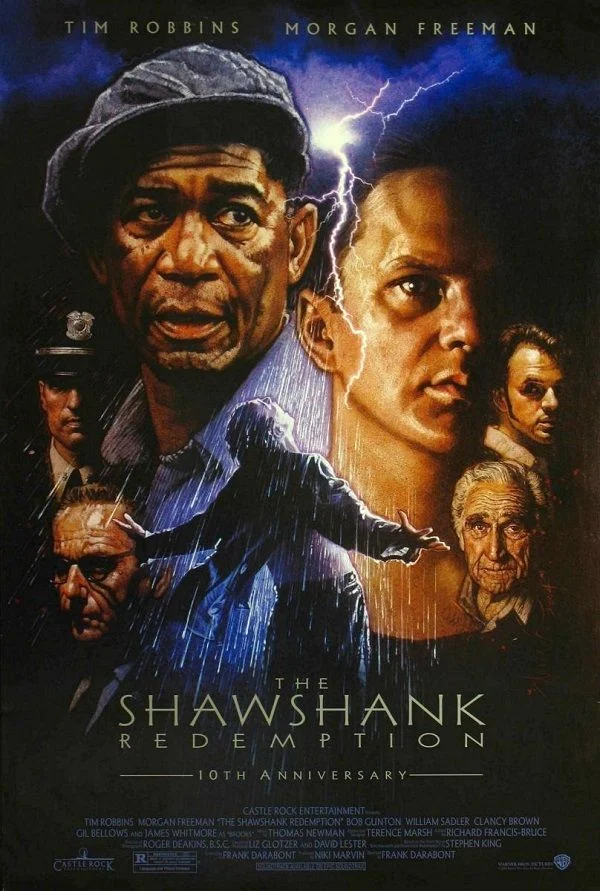
The Shawshank Redemption (Esaretin Bedeli) | Film
Genç ve başarılı bir banker olan Andy Dufresne, karısını ve onun sevgilisini öldürmek suçundan ömür boyu hapse mahkum edilir ve Shawshank hapishanesine gönderilir. İşkence, tecavüz, dayak dahil her türlü kötü koşulun hüküm sürdüğü hapishane koşullarında, Andy'nin hayata bağlı ve her daim iyi bir şeyler bulma çabası içindeki hali, çevresindeki herkesi çok etkileyecektir. Bir süre sonra parmaklıkların arkasında bile özgür bir yaşam olabileceğine bütün mahkumları inandırır. Bu mahkumlardan biri olan Ellis Boyd "Red" ve Andy, unutulmaz bir dostluk kurarak hapishaneyi bambaşka bir yer haline getirirler.

The Godfather (Baba) | Film
Mario Puzo'nun çok satan kitabından Puzo ve yönetmen Francis Ford Coppola tarafından sinemaya uyarlanan eser, 40'lar ve 50'lerin Amerika'sında, bir İtalyan mafya ailesinin destansı öyküsünü konu alıyor. Corleone ailesi, Don Vito Corleone'nin başında olduğu, suça dayalı bir örgüt kurmuş olan İtalyan asıllı meşhur bir ailedir. Aile, New York'taki diğer dört aileyle birlikte New York'un yeraltı işlerini yönetmektedir. Ancak Corleone ailesini diğerlerinden ayıran özelliği, Don Corleone'nin cebinde bozuk para gibi taşıdığı politikacılar ve yargıçlardır. Politikacılar ve yargıçlarla olan bu yakın ilişkileri diğer ailelerin açamadığı kapıları açabilmesini sağlamaktadır.
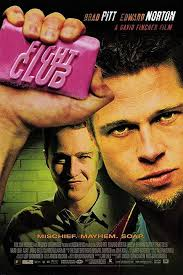
Fight Club (Dövüş Kulübü) | Film
Dövüş Kulübü; Norton, hayatının sıkıcılığından kaçmak isteyen, kronik uykusuzluk çeken Jack rolünde. Her şey, Jack’in karizmatik ama çarpık bir felsefeye sahip sabun satıcısı Tyler Durden ile tanışmasıyla değişir. Tyler’a göre kişisel gelişim zayıfların işidir; asıl yaşamayı anlamlı kılan şey kendini yok etmektir. Kısa süre içinde Jack ve Tyler, bir barda otoparkta birbirlerini pataklamaya başlarlar — bu, onlara hayatın gerçek anlamını hissettiren bir tür arınma olur. Bu şiddetin keyfini başka erkeklere de tattırmak için, birlikte gizli bir Dövüş Kulübü kurarlar. Kulüp kısa sürede çılgınca bir başarı kazanır. Ancak Jack’i her şeyi altüst edecek şok edici bir sürpriz beklemektedir…
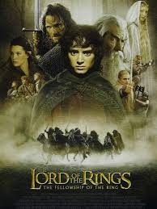
Lord of the Rings (Yüzüklerin Efendisi) | Film
Frodo olarak bilinen genç bir Hobbit, Karanlık Lord Sauron tarafından yaratılan Tek Yüzük'ü yok etme görevine atandığında inanılmaz bir maceraya atıldı. Gandelf, Aragorn ve Boromir dahil olmak üzere üç savaşçı ile görevlendirildi. Ama Yüzük Kardeşliği için kolay bir yolculuk olmayacak.
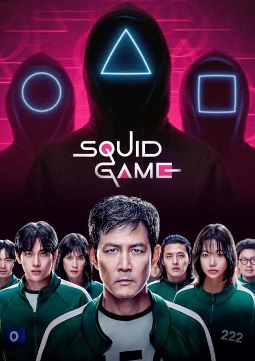
Squid Game | Dizi
Para sıkıntısı çeken yüzlerce oyuncu, tuhaf bir davet alır. Davette onlara cazip bir ödül karşılığında çocuk oyunlarında yarışmaları teklif edilir. Teklifi kabul eden oyuncular, yarışmayı kazanırlarsa 40 milyon dolarlık büyük ödülün sahibi olacaktır. Ancak ödül cazip olsa da oyunun ölümcük riskleri vardır.
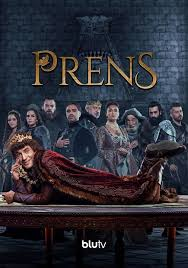
Prens | Dizi
Hikâye, Bongomya adlı hayali bir krallıkta geçer. Kral Thun’un ani ölümü sonrası taht boş kalır ve daha önce ciddiye alınmayan oğlu Prens, bir anda yönetimin başına geçmek zorunda kalır. Hayatını saraydan uzak, izole bir şekilde geçiren Prens’in yönetim konusunda hiçbir deneyimi yoktur. Bu durum hem saray içinde hem de krallık genelinde çeşitli krizlere yol açar. Dizi, bu deneyimsiz karakterin güç, sorumluluk ve kimlik arayışı üzerinden ilerler. Ancak anlatım dili tamamen mizahi ve absürt bir yapıdadır. Ciddi görünen olaylar bile beklenmedik şekilde komediye dönüşebilir. Bu da izlerken sürprizli ve eğlenceli bir deneyim sunar.
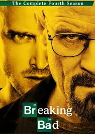
Breaking Bad | Dizi
Kanser olduğunu öğrenen Walter White, eski öğrencisi Jesse'yle uyuşturucu üretmeye başlar Lisede kimya öğretmenliği yapan Walter White bir gün akciğer kanseri olduğunu öğrenir. Kendisi ölünce ailesi için maddi birikim yapmak isteyen Walter'ın yolu, uyuşturucu ağlarını iyi bilen eski öğrenicisi Jesse Pinkman'la kesişince, kolay ama yasa dışı yollardan para kazanmasını sağlayan meth üretimi işine girer.
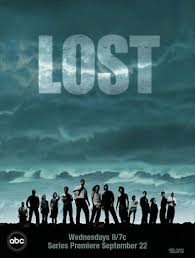
Lost | Dizi
Ücra bir tropik adaya düşen uçaktan sağ kurtulanlar, hayatta kalmak için gizli tehlikeler ve gizemli, karanlık güçlerle başa çıkmak zorundadır.
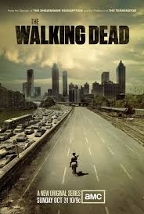
The Walking Dead | Dizi
Uzun süre kaldığı komadan uyanan Rick Grimes kendini zombi işgali altında bir dünyada bulur Rick Grimes adındaki bir şerif yardımcısı, görev esnasında yaşadığı bir çatışmada vurulur ve hastaneye kaldırılır. Uzun bir süre komada kalan Grimes, uyandığında dehşet verici bir dünyayla karşılaşır. Ölümcül bir virüs, insanların beyinlerini ele geçirmeye ve onları zombilere dönüştürmeye başlamıştır. Grimes, sağ kalan bir gruba liderlik eder ve birlikte henüz ölüler tarafından işgal edilmemiş bir kurtarılmış bölge ararlar.
Diğer popüler öneriler zamanla eklenecektir.